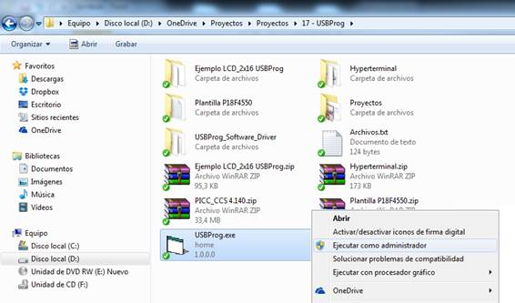
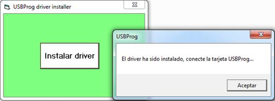

Descripción: Tarjeta para desarrollo de aplicaciones embebidas con microcontrolador PIC
Incluye:
- Tarjeta con microcontrolador PIC16F877A/887
- RTC DS1302 ó DS1307
- Regleta para conexión de LCD alfanumérico 4x16 ó 2x16
- Conector DB-9 para comunicación RS-232
- Regleta para conexión de teclado
- Regleta para conexión de entradas y salidas adicionales
Descargas:
Compilador C CCS (Descargar activador)
Instrucciones de instalación
Instrucciones para instalar el driver de la tarjeta:
1. Descomprima el archivo del instalador del driver, ejecute el programa USBProg.exe y pulse el botón “Instalar driver”. (Si el sistema operativo es Windows 7 se recomienda hacer lo siguiente: Click derecho sobre USBProg.exe y seleccione ejecutar como administrador)


Apague momentáneamente la conexión inalámbrica o cualquier medio que lo conecte a internet. (Esto evitará que el sistema operativo busque el driver en internet)
3. Conecte la alimentación de voltaje de la tarjeta (5V).
4. Si el sistema operativo solicita la ubicación del driver, indique al programa instalador del driver su ubicación en la siguiente ruta: C:\Windows.
5. Al finalizar la instalación del driver puede cerrar la aplicación USBProg.exe.
Instrucciones para reprogramar la tarjeta:
1. Para poner la tarjeta en modo de programación debe conectarla a un puerto USB de su computador:
2. Ejecute la herramienta SIOW..
3. Pulse simultáneamente los el botón RESET y el botón PROGRAM (botón rojo y botón negro, respectivamente).
Libere primero el botón RESET (botón rojo) sin dejar de pulsar program, espere 1 segundo y libere el botón PROGRAM. La tarjeta ha pasado a modo de reprogramación, el dispositivo entrará en modo Bootloader y estará preparado para recibir el nuevo programa.
Cuando el sistema operativo del PC reconozca el dispositivo se mostrará un mensaje indicando que la aplicación se encuentra a la espera de la descarga del programa hacia la tarjeta.
5. Haga click en la opción del menú File-->Download software para seleccionar el archivo .hex de su proyecto que generó el compilador.
6. El programa le informará cuando el proceso haya sido completado.
7. Si requiere reprogramar la tarjeta, solamente necesita repetir el proceso descrito.